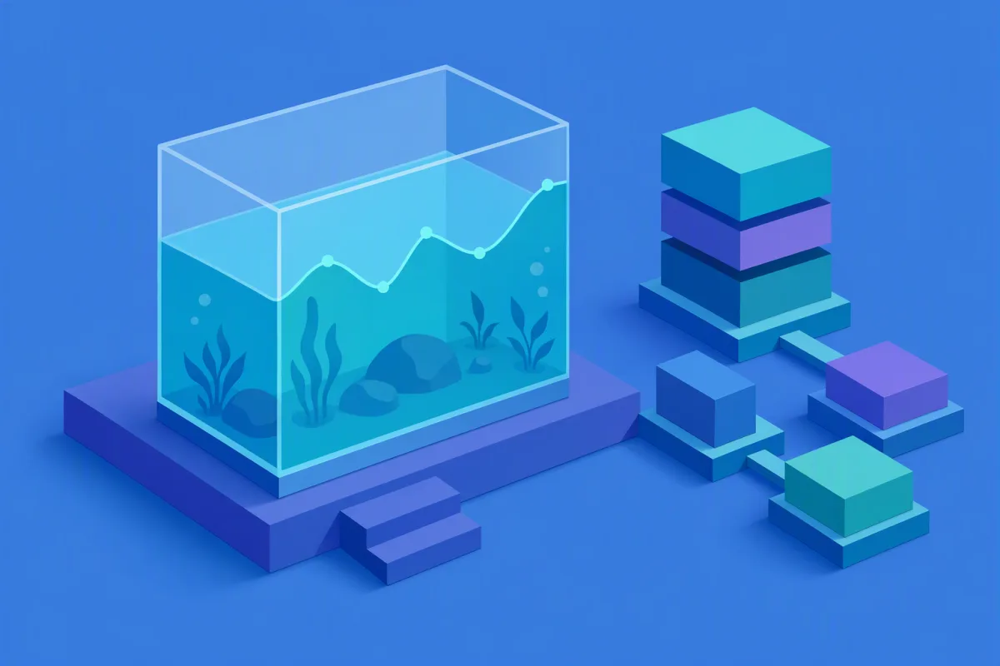

Conteneurisation, CI/CD et migrations de production
J'ai migré la production d'un assureur santé sans une seconde d'interruption. Pourquoi pas la vôtre ?
Voir les prestationsPrestations
- Audit DevOps Personne ne sait ce qui se passe le jour où votre production tombe.
- Industrialisation des déploiements Une seule personne sait mettre à jour ce qui est en ligne, et elle part en vacances.
- Mise en production et hébergement Tout repose sur une installation que personne chez vous ne sait refaire.
- Migration de production Vous devez déplacer votre production sans une minute de coupure.
Recommandations
Arthur progressively took ownership of a complex infrastructure project, eventually driving a large part of the migration independently, including production work and critical surfaces such as alan.com.
He approached the project thoughtfully, showed strong ownership, asked the right questions, and knew when to involve others.
À propos
Bonjour, je suis Arthur. Je suis indépendant, basé dans les Hauts-de-Seine. Je mets des productions en ligne, j'automatise leurs déploiements et je les migre sans les arrêter. Chez Alan, l'assureur santé, j'ai conduit la migration d'une production qui sert plus d'un million d'assurés, sans que personne s'en aperçoive. Je tiens aussi l'infrastructure d'une plateforme esport que j'ai cofondée, et j'exploite ma propre application.
Avant l'infrastructure, j'ai passé dix ans en cuisine, chez Lenôtre, au Plaza Athénée et à La Maison du Chocolat, puis un an à diriger une brigade en Australie. C'est là que j'ai appris à tout préparer la veille, et à régler un incident sans arrêter le service. J'ai changé de métier en 2024, à l'École 42, en systèmes et réseaux. Je documente ce que je livre, pour que vos équipes puissent le reprendre sans moi.
Blog

L'application que je n'ai pas codée
J'ai conçu une application d'aquariophilie sans en écrire le code. Ce qu'elle m'a appris du produit, du modèle économique et de l'architecture.

Mon harnais IA
On me demande toujours quel prompt j'utilise. La vraie réponse : ce qui compte, ce n'est pas le prompt, c'est le cadre que je donne à l'IA.
Tech Radar
- Business Dépréciation de HCP Vagrant en 2026
- Cloud AWS lance les instances EC2 T8i à burst
- DevOps Kubernetes v1.37 renforce la sécurité du stockage des conteneurs
- Tech Microsoft porte le runtime Copilot vers Rust de manière agentique
- Sécurité GitLab sécurise l'usine logicielle à la vitesse machine
- IA GitLab Duo ajoute des modèles open weight hébergés
- Business Calculer le coût total de possession d'une plateforme DevOps
- Cloud AWS permet la copie de volumes EBS entre comptes
- DevOps Kubernetes v1.37 fait passer les histogrammes natifs en Beta
- Sécurité Accès Kubernetes via fournisseur d'identité en tant que client public
- IA Construire une fondation cloud fiable pour l'entraînement IA distribué